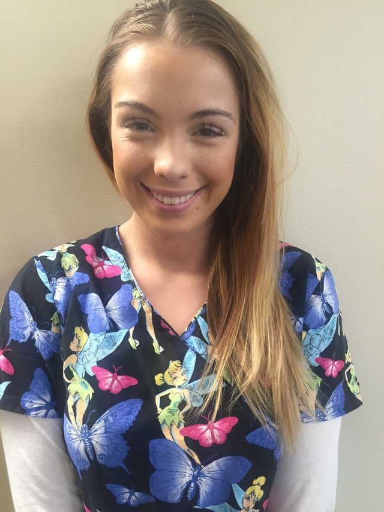
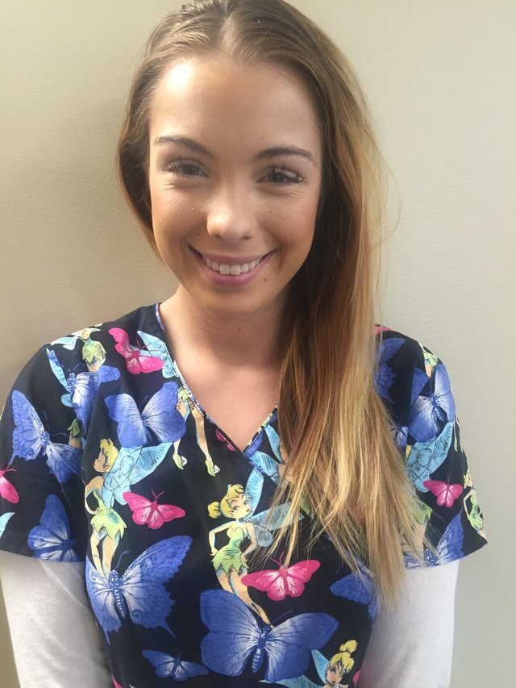

When you want the best available dental care for an infant, child, or special needs child or adult in Anchorage, come visit us at Alaska Dentistry for Kids. We offer both preventative and emergency dental care. We can take x-rays to check for dental problems, create fillings for teeth and help with educating parents on the best way possible to care for their children's teeth.
We want all of our patients to leave our office feeling that they have had a positive experience while with us. We are always friendly, caring and professional, and we're happy to answer any questions you may have. We know that visiting the dentist can cause trepidation - we want to alleviate that worry.

Dr. Chris Coplin says, "Dentistry is our profession; dentistry for kids is our passion." This philosophy can be seen through our entire dental practice. When you come in to see us, you'll find that passion put into practice every time you visit. We keep your kids' teeth looking great and strive to keep our costs affordable - so that money is never an issue when it comes to your children's dental health.

We pass on the knowledge we've obtained while working with children and adults to each of our patients. We know how important it is for you to have a dentist you can trust with the most precious people in your life. Let us take care of the people who matter most to you.
 
